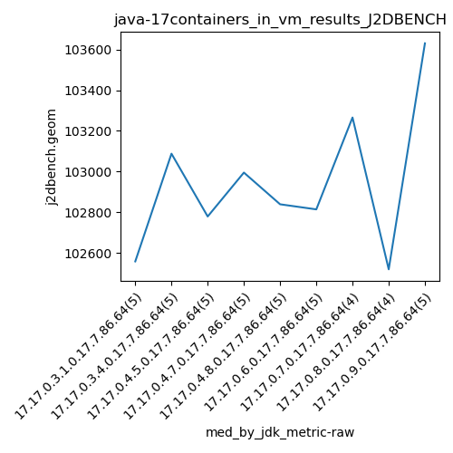
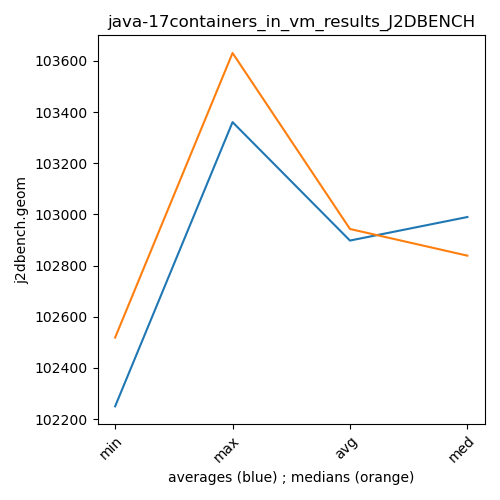

java-17 J2DBENCH
Context at bottom
/home/jvanek/git/benchmarks-in-nested-virtualisation-toolchain/final_results/containers_in_vm_results/containers_in_vm_results_JMH
java-17
J2DBENCH
/home/jvanek/git/benchmarks-in-nested-virtualisation-toolchain/final_results/containers_in_vm_results/containers_in_vm_results_J2DBENCH
java-17
J2DBENCH
containers_in_vm_results_J2DBENCH
final score
Expected number of java-17 JDKs: 9
1st avgmed_alljdks_metric:
/home/jvanek/git/benchmarks-in-nested-virtualisation-toolchain/final_results/result_processing.py /home/jvanek/git/benchmarks-in-nested-virtualisation-toolchain/final_results/containers_in_vm_results/containers_in_vm_results_J2DBENCH j2dbench.geom False
values: [102779, 101558, 101767, 102589, 102558, 103088, 103861, 103739, 102789, 102710, 103147, 103501, 102779, 102449, 102329, 102995, 103777, 103962, 102481, 102892, 103454, 102839, 103524, 102461, 102672, 103313, 101552, 103127, 102616, 102814, 103266, 103369, 103002, 103044, 102519, 101731, 102152, 102905, 102213, 104160, 102892, 103908, 103631]

Expected number of iterations: 5
final number of values: 43 out of 45
Pass rate: 95.6%
values: (101552, 104160, 102904.97674418605, 102892)

** accuracy from all jdks and runs
more is better
MIN: 101552
MAX: 104160
AVG: 102904.97674418605
MED: 102892
Relative differences 1:
MIN-MAX: 3.0 %
MIN-AVG: 1.0 %
MIN-MED: 1.0 %
MAX-MIN: -3.0 %
MAX-AVG: -1.0 %
MAX-MED: -1.0 %
AVG-MED: -0.0 %
stored to java-17.properties. sort | uniq that!
2nd avgmed_by_jdk_metric:
values: [102250.2, 103237.4, 102841.0, 103221.4, 102990.0, 102684.4, 103170.25, 102326.75, 103360.8]

values: [102558, 103088, 102779, 102995, 102839, 102814, 103266, 102519, 103631]

values: (102250.2, 103360.8, 102898.02222222222, 102990.0)
values: (102519, 103631, 102943.22222222222, 102839)

** accuracy from all jdks where runs were avged
more is better
MIN: 102250.2
MAX: 103360.8
AVG: 102898.02222222222
MED: 102990.0
Relative differences 1:
MIN-MAX: 1.0 %
MIN-AVG: 1.0 %
MIN-MED: 1.0 %
MAX-MIN: -1.0 %
MAX-AVG: -0.0 %
MAX-MED: -0.0 %
AVG-MED: 0.0 %
stored to java-17.properties. sort | uniq that!
** accuracy from all jdks where runs were medianed
more is better
MIN: 102519
MAX: 103631
AVG: 102943.22222222222
MED: 102839
Relative differences 1:
MIN-MAX: 1.0 %
MIN-AVG: 0.0 %
MIN-MED: 0.0 %
MAX-MIN: -1.0 %
MAX-AVG: -1.0 %
MAX-MED: -1.0 %
AVG-MED: -0.0 %
stored to java-17.properties. sort | uniq that!
/home/jvanek/git/benchmarks-in-nested-virtualisation-toolchain/final_results/containers_in_vm_results/containers_in_vm_results_RADARGUNs3
java-17
J2DBENCH
/home/jvanek/git/benchmarks-in-nested-virtualisation-toolchain/final_results/containers_in_vm_results/containers_in_vm_results_SPECJBB
java-17
J2DBENCH
/home/jvanek/git/benchmarks-in-nested-virtualisation-toolchain/final_results/containers_in_vm_results/containers_in_vm_results_RADARGUNs1
java-17
J2DBENCH
/home/jvanek/git/benchmarks-in-nested-virtualisation-toolchain/final_results/containers_in_vm_results/containers_in_vm_results_DACAPO
java-17
J2DBENCH
pass rates:
containers_in_vm_results_J2DBENCH=95.6%
Context:
- containers_in_vm_results
- J2DBENCH